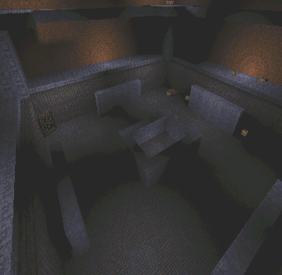
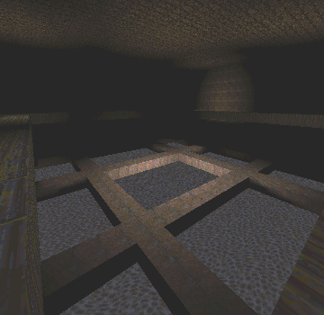
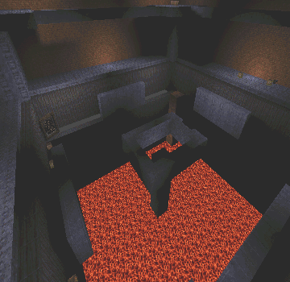

When I was in the process of creating this action packed Deathmatch level. I thought to myself the ideal deathmatch arena would have mulitple sniper towers and traps of all kinds.

a view from one of the four sniper towers
This level has four main sniper towers. The four sniper tower cover the whole arena. From these towers you can frag anyone that is on the bottom floor. But the people on the bottom floor are not completly defenceless. They have walls that will protect them from the sniper across from them. Even thought the snipers have such an advantage, they still be counter attacked. The people on the bottom floor can jump through the telleport that brings them to a level above the snipers. So as you can see, this level involves a lot of stragitict placing.

a view from the level above the sniper towers (the floor is water)
This level contains traps of all sorts. One of the main traps in this level is the retractible floor. There is a button at the top of one of the sniper towers, when activated retracts the floor. Underneath the floor is a lava-pool waiting fpr the poor souls. Might I say that it is a lot of fun to watch your opponents scrambling around the lower level trying to find a lift or tellaport while the floor is slipping from underneath their feet.

the dreadfull lava pool
please download and tell your friends...
and trust me, you'll love it.